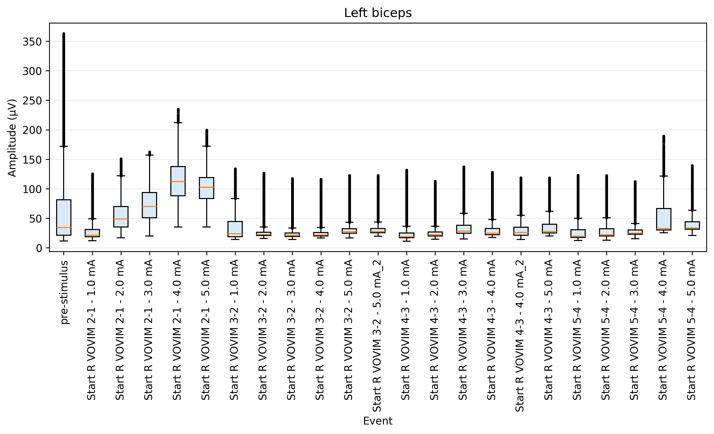

Purpose
This tool was developed for analyzing EDF+ files exported from Cadwell's Arc software. It helps users choose one or more channels, select baseline and stimulation annotations, define time windows, filter the raw signal, compute an RMS envelope, and save PNG box-and-whisker summary plots.
Release 1.0.0 highlights
- Select multiple channels of interest in one analysis run.
- Generate a separate PNG output for each selected channel of interest.
- Assign distinct custom plot titles for individual channel PNG outputs.
Install dependencies
Python 3.10 or newer is recommended.
git clone https://github.com/wustew2035/analyze_edf_gui.git
cd analyze_edf_gui
pip install -r requirements.txtThe required Python packages are:
numpy- numerical array processingmatplotlib- signal previews and box-whisker plotsmne- EDF/EDF+ loading, channel metadata, annotations, cropping, and filteringscipy- numerical/scientific backend used by MNE filtering routines
The GUI also uses Python's standard tkinter module. On Linux, install it with sudo apt-get install python3-tk if needed.
Run the GUI
python analyze_edf_gui.pyThe program opens a file picker. Select an EDF+ file exported from Cadwell Arc.
Basic workflow
- Select an EDF+ file.
- Choose one or more channels of interest. The channel-selection popup supports multi-select and includes a vertical scrollbar for long channel lists.
- Set the bandpass filter limits.
- Choose baseline only, stimulation only, or baseline plus stimulation.
- Select the baseline annotation and baseline time window.
- Select one or more stimulation/event annotations and the event time window.
- Set the RMS smoothing window in milliseconds.
- Optionally enter a default plot title and/or distinct per-channel plot titles.
- Run the final signal analysis and save the PNG output. If multiple channels of interest are selected, the program generates a separate PNG-capable figure for each selected channel.
How raw signals become box-and-whisker plots
- Annotation-locked windowing: each selected annotation onset is used as time zero; the user-defined time window is applied around it.
- Channel extraction: each selected signal channel is processed separately for analysis.
- Bandpass filtering: the selected window is filtered using the user-specified low and high cutoff frequencies.
- Conversion to microvolts: signal values returned by MNE are multiplied by 1,000,000 for plotting in µV.
- Moving RMS smoothing: the signal is squared, averaged in a moving window, and square-rooted to estimate local amplitude.
- Rectification: amplitudes are kept as non-negative values.
- Box-whisker plotting: the first box represents the baseline/pre-stimulus distribution; later boxes represent selected stimulation/event windows. When multiple channels are selected, each channel receives its own box-whisker figure and PNG output.
Sample output
Example PNG output from the analysis workflow:

Notes and limitations
- The GUI is intended for interactive exploratory analysis, not automated batch statistics.
- Results depend on correct channel, annotation, filter, and time-window selections.
- Always visually inspect signal previews and confirm that annotations align with the intended physiological events.